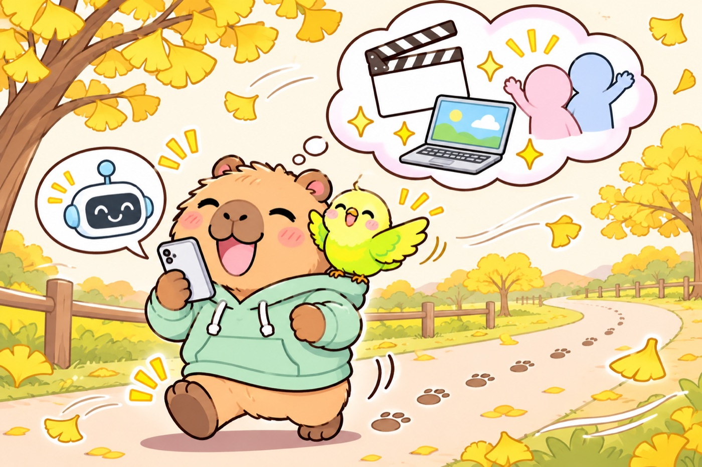
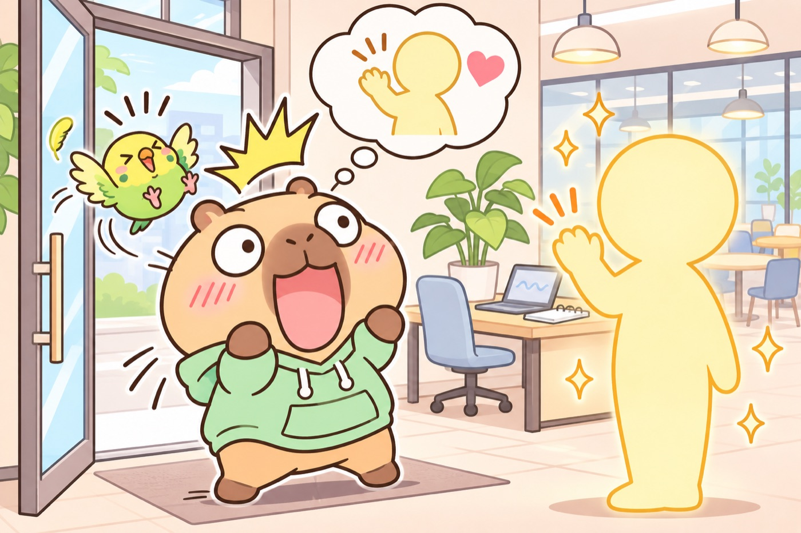
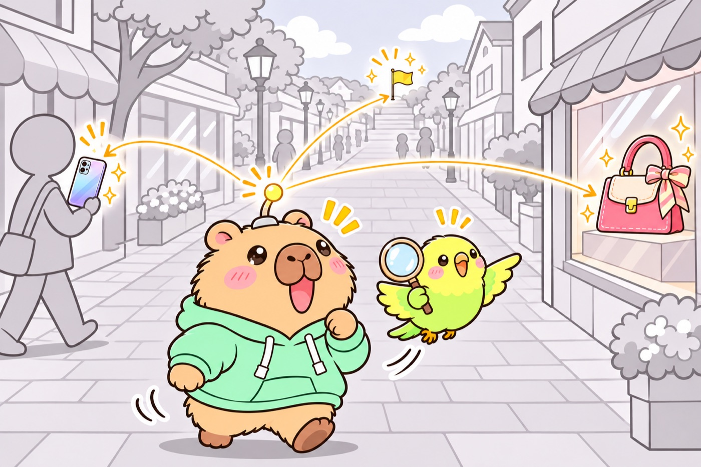

書いたら引き寄せるって
ほんとだなぁ、
と思った日🧲

今朝しゃべった声を、そのままお届けします。読むのがしんどい日は、耳でどうぞ😊
♪ BGM：Morning／しゃろう
そんな方、いませんか？😊
私も「書いて終わりで叶うわけじゃないよな〜」と思いつつ、続けていて「あ、引き寄せって本当かも😳」と感じた体験があったんです。
みなさん、おはようございます〜！
ストレングスファインダー認定コーチのおけもんです🦫
ジャーナリングコラム、3日目やっていこうと思います🙌
昨日の音声版を聞いて、「あれ、ちょっとテンション低めかな？」と思った方がいるかもしれません。実家から、朝の早い時間に撮っているので、少し声を抑えめに喋っているんです。機嫌が悪いわけではないので🤣、ゆるっと聞いていただけたらうれしいです😊
あ、本題に入る前にひとつだけ！
毎回出している次回予告は、AIにざくっと出してもらっています。なので、予告とは違う話をすることもあるかもしれませんが、そこはご愛嬌ということで🤣
今日のテーマは、「書いたら引き寄せるってほんとだなぁ、と思った日」です。
🚶AIと散歩して喋ったら、次の日に本当に会えた
ジャーナリングを始めてから、私自身「引き寄せ力がすごく上がったなぁ」と感じていて、オフ会などでお会いした方にもよくお話ししています。
私の場合は「書く」というよりも、AIと散歩しながら喋って、自分の気持ちと向き合ったり、「本当はこうしたいな」と口に出したりすることが多いんです。
ちょうど稼げや祭りが始まる頃のある日、2時間くらいAIと散歩しながら喋った日がありました。
学長もよく「先行く人に会いに行こう」っておっしゃるじゃないですか。そこから、「私って、どんな人に会いに行きたいんやろ？」と考えてみたんです。
なんて思いながら、AIと喋っていました。

そしたら、なんと次の日。
オフィスに行った時に、本当にその人にばったりお会いしたんです😳

それから、AIブースのメンバーの一人としてご相談をいただいて、今はリベの中でもトップクラスにAIを使いこなしている人たちと一緒に、フェスの出店に向けて活動させてもらっています🙌
これは本当に、「書いたから引き寄せた」って言っていいんじゃないかな〜と思っています。
📡それって偶然？ 脳のアンテナのお話
とはいえ、「それって偶然じゃない？」と思う方もいますよね😊
たしかに偶然かもしれないんですが、なんでこういうことが起こるのか、私なりの言葉でお話ししてみます。
1日目にもお話ししたように、脳は決めた方向に向かっていきます。
たとえば、自分の携帯が古くなって「そろそろ新しくしたいな」と思っていたら、街中で新しいiPhoneを使っている人が気になったり。欲しいブランドのバッグや服があったら、それを持っている人が妙に目に入ったり。そういう経験、みなさんにもありますよね？

脳には「RAS（ラス）」という機能があって、意識を集中したものの情報がすごく気になったり、そこに向かっていったりするんです。
だから、「こんなんしたいな、あんなんしたいな」と思ったことに対して情報の感度が働いて、必要な情報を取ってきて、意識したかしていないかは別として、自然と何かしらの行動を取っているんだろうなと思います。
🌱書いて終わりじゃない。ピンが立つと、自然と動き出す
ここで注意してほしいのは、「書いて終わりで、何もしなくても願いが叶う」という話ではない、ということです。
書いたりアウトプットしたりして自分に意識づけて、「私はこういうことがしたいんだな」と思ったことに対して、何か少しでも小さな行動をしてみる。それによって、自然と自分の行きたい場所や目標に近づいていくんだと思います。
私自身も、「ジャーナリングをしたいな」「もっと書いて、いろんな夢を叶えられるようになりたいな」と思っていたからこそアンテナが立って、ちょるさんに「一緒にこんなチャットやりませんか？ イベントやりませんか？」と相談させてもらって、今こうやってジャーナリングチャットをさせてもらっています😊
もうひとつ。昨日から音声でも配信し始めたんですが、BGMにかけている「Morning」という曲、YouTubeなどで聞いたことがある方も多いかもしれません。
私の中で「あんなふうに音楽をかけながら配信するの、やってみたいな〜」と思っていたので、昨日、音声に音楽を当てる時に、
と、自然と動けたんですよね🙌
ピンが立つと、
自然と動き出す。
みなさんも、「実はこんなことしたいな」と気づいたことから、何か行動を起こした経験、思い返すとあるんじゃないでしょうか？ そういう経験を思い出してみるのも、すごくいいことだなと思います😊
🥂「今できるか」より、「ぶっちゃけ、どうしたい？」
最後に、書く時のポイントをひとつ。
それは、「今できるか、できないか」は考えないことです。
セッションで「やりたいことは何ですか？」と聞くと、どうしても「今の自分にできるかな？」と考えてしまう方が多いんです。もちろんそれ自体が絶対ダメではないんですが、今私たちに起きていることって、できることばかりをやってきた結果ではないですよね。
たとえばこうしてリベシティに参加しているのも、オンラインコミュニティに入った経験がある人ばかりではなかったはず。みなさん、今までやったことのないことを何かしら乗り越えて、今ここにたどり着いています。
むしろ、夢を叶えるとか、目標を達成するとか、引き寄せるって、自分の想像もつかないところからやって来たりするんです😳
コーチングの質問でも、制約を外してこんなふうに聞くことがあります。
- もし、あなたを止めるものが何もなかったら、どうしますか？
- もし、みんなが味方で、全員が応援してくれて、何でもしていいよと言われたら？
シンプルに言うと、「ぶっちゃけ、どうしたい？」。
この視点で考えてみるのがいいなと思います🙌
ちなみに、私が来年の誕生日の目標に挙げているのは、「アマン東京での乾杯」です🥂
でも、書くことで、そこに向かって自分が想像もつかない行動をするんじゃないかな〜と、自分自身に期待しています😆
書いている中で目標が変わっても、大丈夫。そのあたりの話は、また今度しようと思います😊
📎おまけ｜書いて叶えた、あの人たち
録音のあとで、「そういえば、あの人たちも書いてたよなぁ」と思い出しました。AIの相棒に調べてもらったので、おまけで置いておきますね😊
- 🥊村田諒太さん｜冷蔵庫の貼り紙奥さんの佳子さんが、自宅の冷蔵庫に「五輪で金メダルを取りました。ありがとうございます」と書いた紙を貼っていました。まだ取っていないのに、もう叶ったことのように“過去形”で。村田さんは「いいね」と応えたそうです。
結果は、ロンドンオリンピックで金メダル🥇 日本のボクシングでは48年ぶりでした。 - ⚾大谷翔平さん｜高校1年生のマンダラチャート花巻東高校1年生の時、佐々木監督の教えで書いた目標のシート。真ん中は「8球団からドラフト1位」。
そのまわりに、体づくり・コントロール・キレ・スピード160キロ・変化球・メンタル・人間性・運の8つ。さらに「運」のまわりには、ゴミ拾い、審判さんへの態度、道具を大切に使う、応援される人になる…と、毎日できる行動まで書いていました。
高校時代に本当に160キロを出して、ドラフト1位でプロへ。 - ⚽本田圭佑さん｜小学校の卒業文集世界一のサッカー選手になる。W杯で有名になって、セリエAに入団する。レギュラーになって、10番で活躍する。そんな未来を、順番に書いていました。
2013年12月、ACミランへの入団が発表された時の背番号は、本当に10番でした。 - ⚾イチローさん｜小学6年生の作文「僕の夢」夢は、一流のプロ野球選手。3歳から練習を始めて、3年生からは1年のうち360日は激しい練習をしている、と書いています。
入りたい球団、契約金の目標、お世話になった人に招待券を配ることまで。のちにドラフトで指名されて、プロ野球選手になりました。
4人とも、「なりたいなぁ」で終わらずに、細かいところまで書いて、毎日そこに向かって動いていたんですよね。
「書いて、小さく動く」。やっぱりここやなぁと思いました😳
もうひとつ、「脳のアンテナ」のおまけ。
欲しいものばかり目に入るあの現象、「カラーバス効果」という名前がついているそうです。海外の解説では、「脳は赤い車を作り出しているんじゃない。今まで捨てていた情報を、捨てなくなるだけ」という言い方をしていて、なるほど〜となりました😊
参考にした記事：日本経済新聞（村田さん）／カオナビ人事用語集・Forbes JAPAN（大谷さん）／Number Web（本田さん）／RENOTE（イチローさんの作文）・Number Web（イチローさんのドラフト）
もっと知りたい方へ。短い動画を2本、置いておきます👇
📺 3分半でわかる 人生が変わる？！カラーバス効果（学校では教えてくれない話） 👉 タップして動画を見る YouTubeが開きます 📺 本田健さんご本人の動画（約13分） 本田健がオススメする使える「引き寄せ」｜引き寄せは「引き合い」というお話 👉 タップして動画を見る YouTubeが開きます☘️今日、ひとつだけ書いてみませんか？
「こんなテーマで話してほしい」「これってどうなん？」という質問やリクエストも大歓迎です😊
これまでのコラム
- 1なぜ書くと願いが叶うの？ 脳の「カーナビ」に目的地を入れよう
- 2書くと、「なぜそこへ向かいたいのか」が見えてくる
- 3「書いたら引き寄せるってほんとだなぁ」と思った日
- 4決めれば叶う🌈（明日）
最後まで読んで（聴いて）いただき、ありがとうございました！
おけもんでした🦫